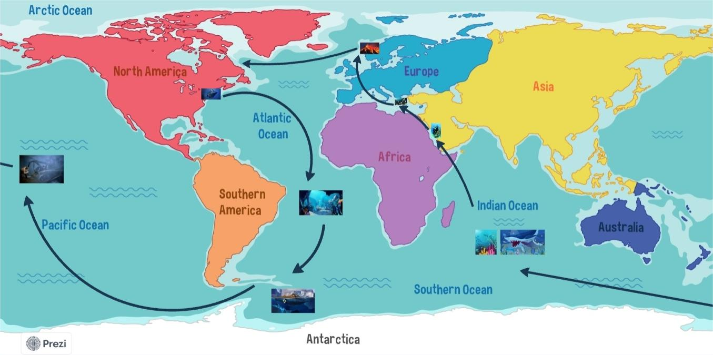

20,000 Leagues Under the Sea
This project visualizes the journey described in Jules Verne's classic novel "20,000 Leagues Under the Sea". It uses an interactive map to show the locations and events encountered by Captain Nemo and his crew aboard the Nautilus.
The story begins in 1866 when a giant sea creature is sighted by several ships, causing global panic. Professor Pierre Aronnax, a French marine biologist, his servant Conseil, and a Canadian whaler named Ned Land are invited to join an expedition to capture this sea monster. Unfortunately, their ship is attacked by the creature, and they fall into the sea, only to be captured by the monster, which turns out to be the advanced submarine Nautilus, commanded by Captain Nemo.
Captain Nemo takes the three men on a breathtaking underwater adventure, exploring the depths of the ocean and encountering various wonders, including shipwrecks, underwater forests, pearl beds, and strange sea creatures.